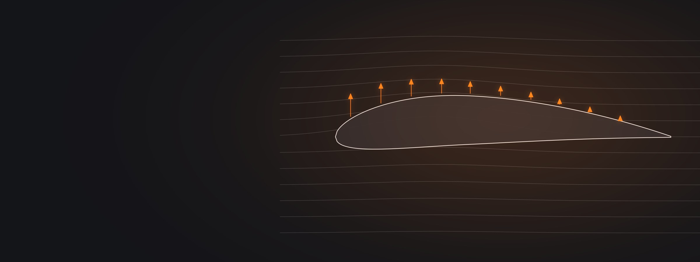

Three series on the equipment: how a paraglider actually flies and why it collapses, what new technology does and does not change, and what reserves, harnesses, helmets and lines can and cannot do, from the people who design, test and repack them.
A deep dive into the technical aspects of free flight. Comprehensive knowledge about the mechanics, equipment, and technological advances in paragliding.
How a Paraglider Actually Flies
Build a deeper understanding of the forces and principles that govern safe and efficient flight.
Is New Paragliding Technology Making Wings Safer?
Explore innovations that are shaping performance, safety, and the future of flying.
What Your Gear Can and Cannot Do
Gain confidence in your equipment through deeper understanding, maintenance, and selection knowledge.
Each answer draws on the series pages and links to the chapters where the guests say it.
Not on its own. Frantisek Pavlousek's view is that safety and performance both follow the weakest point of the chain, so a C wing flown by a B pilot gives neither. Stephan Stiegler sets a threshold from the middle of the B class: be ready to stop the pitch, then learn to feel it coming, and you fly the wing rather than the other way round.
Frantisek Pavlousek Can a buyer decide from a test report aloneStephan Stiegler Moving from the glider to the pilot's abilityIt depends on the collapse. For a side that drops, SIV coach Helmut Schrempf says to release the tension from your hip on that side; pressing in gives the wing the wrong input and starts it rolling. After a collapse at full speed, Beni Kälin points out that the wing has little pressure inside and reopens slowly hands-up, so countersteer and pump the closed side.
Helmut Schrempf Anticipating collapses on a stable wingBeni Kälin How an SIV differs under one of these wingsYes. In Urs Haari's clinics pilots hang in a simulator the night before and throw, and three in ten cannot get the reserve out of their harness. He calls that the cheapest and most decisive equipment test in the sport, and the one almost nobody does. Then, if you can, throw it for real over water, which Will Gadd recommends too.
Urs Haari Analysing a deployment that went wrongWill Gadd What could actually kill you, and what to doFrantisek Pavlousek's long-time flying friends wait until a wing has been on the market for about a year, so that people know how it behaves. When you do choose, Stephan Stiegler suggests reading the designer's description of who the wing is for rather than tallying certification grades, because a low B can fly much like an A in the air.
Frantisek Pavlousek A masterclass in paragliding fabricsStephan Stiegler The proposal to abolish the categoriesNot from the test report alone, says Tom Lolies: reports show how collapses went, never how easily they happen, and a pitch-unstable wing can even score well because it folds so readily. One sign he looks for is slack B lines at full speed, which means the lift has moved forward onto the A lines. It is a green flag among several, not a rule.
Tom Lolies Reading a test report properlyTom Lolies The green flags to look for in a wing